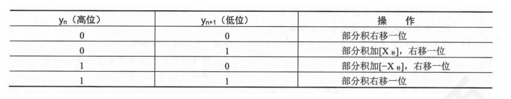

第 1 题
十进制数-37 的8 位补码表示是（ ）。
- A．11011011
- B．11011100
- C．10100101
- D．10100011
答案与解析
答案：A
37的二进制为00100101，取反得11011010，加1后为11011011，A正确。
第 2 题
𝑥补= 𝑋0, . 𝑋1𝑋2…𝑋𝑛𝑛为整数，它的模是（ ）
- A．2𝑛−1
- B．2𝑛
- C．1
- D．2
答案与解析
答案：D
补码的本质是取模：a \ mod m=a−\ lfloor\ frac{a}{m} \ rfloor·m （结果非负，且落在机器数的范围0 2 −2−𝑛内)，对于补码表示的定点小数，模数是2。对于补码表示的定点整数如𝑥补= 𝑋0𝑋1𝑋2…𝑋𝑛𝑛为整数，模数是2𝑛+1。
第 3 题
已知大写英文字母A 的ASCI 码为41H，现字母F 被存放在某个存储单元中，若采用偶校验假设最高位作为校验位），则该存储单元中存放的十六进制数据是（）。
- A．46H
- B．C6H
- C．47H
- D．C7H
答案与解析
答案：B
F的ASCII码应46H=1000110B。标准的ASCII码为7位，在7位数前面增加1位校验位。按照偶校验规则，偶校验位为1。存储单元中存放的是整个校验码（包括校验位和信息位）应为11000110B=C6H，B正确。
第 4 题
一个8 位二进制整数，若采用补码表示，且由4 个1 和4 个0 组成，则最小值为（ ）。
- A．-120
- B．-7
- C．-112
- D．-121
答案与解析
答案：D
补码负数的特点是数值位对应的真值越小，其绝对值越大，即负得越多。所以，由4个1和4个0组成的补码数中，最小的补码表示为10000111，即真值为-121，D正确。
第 5 题
数值数据和逻辑数据在形式上没有任何差别，计算机区别数值数据和逻辑数据的主要方法是 （）。
- A．将数值数据和逻辑数据分开存放在不同的寄存器中
- B．在数据中用专门的标识位指出是数值数据还是逻辑数据
- C．用不同的指令操作码来区分本指令处理的是哪种数据
- D．用不同的时间段来区分当时处理的是哪种数据
答案与解析
答案：C
计算机里的各种数据，都是二进制数据，它们本身没有区别。通过不同的指令操作码来对数据进行解释：如果是逻辑运算（与或非），CPU就把它们当成逻辑数据；如果是算术运算加减乘除），CPU就把它们当成数值数据，C正确。
第 6 题
下列关于原码、补码、移码的叙述中，正确的是（ ）。
- A．计算机使用原码实现加减法
- B．计算机用补码对有符号整数编码
- C．移码通
- D．原码通常用来表示浮点数的阶数常用来表示浮点数的尾数
答案与解析
答案：B
计算机常用补码表示有符号数，以实现加减法的统一，A错误，B正确；浮点数的尾数可以用原码和补码表示，在IEEE 754标准中，采用原码表示浮点数尾数，C错误：浮点数的阶通常采用移码表示，D错误。
第 7 题
8 位二进制机器数，则其表示移码时的真值和表示补码时的真值差值为（ ）
- A．128
- B．-128
- C．256
- D．128 或-128
答案与解析
答案：D
表示移码时，真值𝑥1=𝑥移−128，表示补码时：①当符号位为0（正数和0），补码真值𝑥2=𝑥补，差值𝑥1 −𝑥2=−128。（这里𝑥移=𝑥补= 机器数）②当符号位为1（负数），补码真值𝑥2=𝑥补−256，差值𝑥1 −𝑥2= 128。综上，答案选D。注意：移码和补码，表示范围一样，同一个真值，其移码和补码符号位相反。
第 8 题
负零的补码表示为（ ）。
- A．1 00...00
- B．0 00...00
- C．0 11...11
- D．111...11
答案与解析
答案：B
补码±0表示唯一，为全0，B 正确。
第 9 题
下列关于补码和移码关系的描述中，错误的是（ ）。
- A．零的补码和移码相同
- B．一般用移码表示浮点数的阶码，而用补码表示定点数
- C．同一个数的补码和移码，其数值部分相同，而符号相反
- D．相同位数的补码和移码具有相同的数据表示范围
答案与解析
答案：A
两者的区别在于符号位不同，A错误。
第 10 题
设𝑥补= 1. 𝑥1𝑥2𝑥3，仅当（）时，X>-1/2 成立。
- A．x1 必须为1，x2x3 至少有一个为1
- B．x1 必须为1，x2x3 任意
- C．x1 必须为0，x2x3 至少有一个为1
- D．x1 必须为0，x2x3 任意
答案与解析
答案：A
A选项：x1为1，×2x3至少有一个为1，如[X]补=1.101，则X = -0.011，X = -（1/4+1/8），即X>-1/2成立； [X]补=1.110，则X=-0.010，X = -1/4，即X>-1/2成立：[X]补=1.111，则X = -0.001，X -1/8，即X>-1/2成立，A正确。 B选项：x1为1，×2×3任意时，如［X］补=1.100，则X=-0.100，X=-1/2，即X>-1/2不成立， B错误。 C选项：x1为0，×2×3至少有一个为1，如［X］补=1.010，则X=-0.110，X=-（1/2+1/4），即X>-1/2不成立，C错误。 D选项：x1为0，×2x3任意，如［X］补=1.000，则X=-1，即X>-1/2不成立，D错误。
第 11 题
一个8 位的二进制整数由2 个“0”和6 个“1”组成，采用补码或者移码表示，则下列说法中正确的是（）。
- A．若采用移码表示，偏置值为127，则此整数最小为-64
- B．若采用移码表示，偏置值为128，则此整数最大为123
- C．若采用补码表示，则此整数最小为-96
- D．若采用补码表示，则此整数最大为252
答案与解析
答案：A
2个“0”和6个“1”组成的8位二进制整数中，若用补码表示，要使得数值最大，符号位必须为0，并且将“1”置于高位上，则补码最大为01111110B=126，故D错误；补码表示的最小值，符号位应是1，因为补码变原码要取反，故其余的1应放在低位上，则补码最小为1001 1111B=-97，故C错误；若采用移码表示，偏置值为128，要使整数最大则1应放置在高位，即11111100B-10000000B=252-128=124，故B错误；若采用移码表示，偏置值为127，要使整数最小则1应放置在低位，即真值=00111111B（移码）-01111111B（偏置值）=11000000B=-64，则A正确。提示：题设补码表示的最小整数也可以通过位权来解释，将5个1放在最低位上，剩下的1放在符号位上（唯一的负权），此时为最小整数。
第 12 题
关于模4 补码，下面叙述正确的是（ ）。
- A．模4 补码与模2 补码不同，它更容易检查乘除运算中的溢出问题
- B．每个模4 补码存储时，只要存1 个符号位
- C．存储每个模4 补码时，只需要存2 个符号位
- D．模4 补码，在算术与逻辑部件中为1 个符号位
答案与解析
答案：B
模4补码具有模2补码的全部优点而且容易检查加减运算中的溢出问题。有必要指出，存储每个模4的补码时，只要存一个符号位，因为任何一个正确的数值，其模4补码的两个符号位总是相同的。只在把两个模4补码的数送往算术与逻辑部件完成加减计算时，才把每个数的符号位的值同时送到算术与逻辑部件的两位符号位，即只在算术与逻辑部件中采用双符号位，B正确。
第 13 题
计算机中常采用下列几种编码表示数据，其中±0 编码相同的是（ ）。 I．原码II．反码III．补码IV．移码
- A．I 和III
- B．II 和III
- C．III 和IV
- D．I 和IV
答案与解析
答案：C
对于真值0，原码和反码各有两种不同的表示形式，而补码和移码只有唯一的一种表示形式。正因为补码和移码0的表示形式唯一，才使得补码和移码比原码和反码能够表示的负数个数多一个，C正确。
第 14 题
用12 位补码规格化表示定点小数时，所能表示的正数范围是（ ）。
- A．2−12～1 −2−12
- B．2−11～1 −2−11
- C．1/2～1 −2−11
- D．（1/2 + 2−11）～1 −2−11
答案与解析
答案：C
字长12位，定点补码规格化小数表示时，所能表示的最小正数是0.10000000000，即1/2；所能表示的最大正数是0.11111111111，即1 −2−11，C正确。规格化负数小数范围为[-1, -1/2)。
第 15 题
能够实现两个4 位二进制数相加的运算部件是（ ）。
- A．全加器
- B．半加器
- C．由4 个全加器构成的加法器
- D．由4 个半加器构成的加法器
答案与解析
答案：C
全加器有3 个输入（2 个bit 的输入位，1 个低位进位输入）两个输出（1bit 进位输出，1bit 求和结果），可以处理低位的进位。4位二进制数相加需要4个全加器依次连接，低位全加器的进位输出作为高位全加器的进位输入，C正确；半加器有2 个输入（2 个bit 的输入位，无低位进位输入）两个输出（1bit 进位输出，1bit 求和结果），半加器不考虑低位进位，不能完成多位二进制数相加，B、D错误；单个全加器只能处理一位二进制数相加，A错误。
第 16 题
并行进位加法器相比串行进位加法器的优势是（ ）。
- A．电路复杂度低
- B．逻辑门延迟低
- C．功耗更小
- D．支持更多运算
答案与解析
答案：B
并行进位加法器能并行生成各位的进位信号，大大减少了进位信号的传输延迟，逻辑门延迟更低，B正确。
第 17 题
以下部件中不属于ALU 核心功能的是（ ）。
- A．算术加减
- B．逻辑与/或
- C．移位操作
- D．指令译码
答案与解析
答案：D
CPU 由控制器和运算器组成，指令译码由控制器的指令译码器完成，ALU 属于运算器，所以指令译码不属于ALU功能，D错误。ALU的功能有：定点数的逻辑、移位、算数运算。
第 18 题
下列说法中错误的是（ ）。
- A．运算器中通常都有一个状态标记寄存器，为计算机提供判断条件，以实现程序转移
- B．补码乘法器中，被乘数和乘数的符号都不参加运算
- C．先行进位加法器中高位的进位依赖于低位数据位
- D．在小数除法中，为避免溢出，要求被除数的绝对值小于除数的绝对值
答案与解析
答案：B
运算器中通常都有状态标记寄存器，计算机中的条件转移指令正是根据状态标记寄存器中的状态位来判断是否执行转移指令，A正确。原码乘法中，符号才单独考虑，被乘数和乘数的符号位需要进行异或运算。补码乘法符号位参加运算，B错误。用n位全加器实现两个n位操作数各位同时相加，这种加法器称为并行加法器，高位的进位依赖于低位进位，C正确。在小数除法中之所以需要用被除数减去除数，其原因是使被除数的绝对值小于除数的绝对值以避免溢出，D正确。
第 19 题
在串行进位的加法器中，影响加法器运算速度的关键因素是（ ）。
- A．门电路的级延迟
- B．元器件速度
- C．进位传递延迟
- D．各位加法器速度的不同
答案与解析
答案：C
本题中4个选项均会对加法器的速度产生影响，但只有进位传递延迟对并行加法器的影响最为关键，C正确。
第 20 题
串行进位加法器中，每位全和的形成除与本位相加两数数值位有关外，还与（ ）有关。
- A．低位数值大小
- B．低位数的全和
- C．高位数值大小
- D．低位数送来的进位
答案与解析
答案：D
四位并行加法器结构如下图所示，加法每位全和Si的形成除与本位相加两数数值位有关外，还与低位数送来的进位Ci有关，D正确。
第 21 题
在补码定点运算器中，无论是单符号位还是双符号位，必须有溢出判断，它一般用（ ）实现。
- A．与非门
- B．或非门
- C．异或门
- D．与或非门
答案与解析
答案：C
计算机加法器判断补码定点加减运算的溢出时，都涉及异或运算，因此溢出判断电路一般使用异或门实现，C正确。请回忆CF、OF、双符号位判断溢出各自的过程。
第 22 题
关于标志寄存器的叙述，错误的是（ ）。
- A．不需要像通用寄存器那样，对标志寄存器进行编号
- B．条件转移指令根据其中的一些的标志位来确定PC 的值
- C．可以通过指令直接访问标志寄存器、并修改它的值
- D．可以用它来存放执行指令得到的各种标志信息
答案与解析
答案：C
标志寄存器中的内容，是执行指令的过程中，CPU根据指令执行的结果生成的，用户不能通过指令直接指定标志寄存器的编号或者修改它，C错误。
第 23 题
若在补码运算中，计算X = 0101B - 0011B，正确的运算过程和结果是（ ）。
- A．0101B + 1101B = 0010B ，无溢出
- B．0101B + 1101B = 0010B ，有溢出
- C．0101B - 0011B = 0010B ，无溢出
- D．0101B - 0011B = 0010B ，有溢出
答案与解析
答案：A
在补码运算中，减法运算转换为加法运算，减数0011B的补码是1101B，则0101B + 1101B = 0010B。而正数与负数不会出现溢出，A正确。
第 24 题
某计算机字长为8 位，其内部有一个8 位加法器，若无符号数x=69，y=38，则计算x-y 时，两输入端和最低位进位信号分别为（）。
- A．01000101;11011001;1
- B．01000101;11011010;1
- C．01000101;11011001;0
- D．01000101;11011010;0
答案与解析
答案：A
做减法时，加法器会对减数取反，最低位进位则是1（减法时sub=Cin=1），因此选A。
第 25 题
在原码除法运算中，若采用不恢复余数法，当余数为负时，下一步操作是（ ）。
- A．商0，余数左移一位，加上除数的补码
- B．商0，余数左移一位，加上除数的原码
- C．商1，余数左移一位，加上除数的补码
- D．商1，余数左移一位，加上除数的原码
答案与解析
答案：A
在原码除法不恢复余数法中，当余数为负时，商0，然后将余数左移一位，加上除数的补码恢复余数，以便进行下一次运算，A正确。记忆：“正一减，负0 加”：若中间余数为正数，上商为1，下次做减法；若中间余数为负数，上商为0，下次做加法。
第 26 题
以下关于运算电路的说法，正确的是（ ）。
- A．乘法运算电路只能通过加法器和移位器实现
- B．减法运算电路与加法运算电路的硬件结构完全相同
- C．实现除法运算的电路比乘法运算电路更复杂
- D．基本运算部件中的全加器不能进行减法运算
答案与解析
答案：C
除法运算涉及多次比较、移位和减法操作，其电路实现通常比乘法运算电路更复杂，C正确；乘法运算电路除了通过加法器和移位器间接实现，还可以直接实现乘法电路，A错误；减法运算电路虽然可通过补码转换为加法运算，但硬件结构并非与加法运算电路完全相同，比如一种实现方式就是要在加法运算电路输入端加上取反加一的电路实现，B错误；全加器通过适当的输入设置 （如利用补码）可以参与减法运算，D错误。
第 27 题
32 位补码除法，除数为FFFFFFFEH，被除数为80000000H，结果是（ ）。
- A．230
- B．−230
- C．溢出
- D．除0 异常
答案与解析
答案：A
将补码转换为真值进行运算，−231/−2= 230，A正确。补充：32位补码除法，除数为FFFFFFFFH，被除数为80000000H，结果是？答案：将补码转换为真值进行运算，除数为- 1，被除数为−231，商为231。32位补码最大值为231−1，因此商超出范围，发生溢出
第 28 题
进行32 位补码整数除法时，已知被除数为32 位补码，除数寄存器Y 的初始值是（ ），余数寄存器R 的初始值是（），余数/商寄存器Q 的初始值是（ ）。
- A．被除数符号拓展低32 位，除数，被除数符号拓展高32 位
- B．除数，被除数符号拓展低32 位，被除数符号拓展高32 位
- C．除数，被除数符号拓展高32 位，被除数符号拓展低32 位
- D．被除数符号拓展低32 位，被除数符号拓展高32 位，除数
答案与解析
答案：C
对于补码整数除法，除数寄存器Y初始值为除数的补码，余数寄存器R初始值为被除数符号拓展高32位，余数/商寄存器Q初始值为被除数符号拓展的低32位，C正确。进行32位原码定点小数除法时，已知被除数为32位原码，除数寄存器Y的初始值是（），余数寄存器R的初始值是（），余数/商寄存器Q的初始值是（）。答案：除数，被除数，32位全0。对于原码定点小数除法，除数寄存器Y初始值为除数的原码，余数寄存器R初始值为32位被除数，余数/商寄存器Q初始值全部补0。
第 29 题
Booth 算法是一种高效的补码一位乘法算法，它利用对乘数和被乘数的特定编码来减少所需的加法和减法操作次数。那么设x=-0.1101，y=0.1011，在利用Booth 算法求x*y 时，部分积加−𝑥补的次数为（）。
- A．0
- B．1
- C．2
- D．3
答案与解析
答案：C
这题首先在y后面添0𝑦𝑛+1，然后从后往前看，每次看两位，只有出现𝑦𝑛𝑦𝑛+1= 10，部分积+−𝑥补，可知出现两次。补码一位乘法(Booth 算法)运算规则如下。 （1）符号位参与运算，运算的数均以补码表示。 （2）被乘数一般取双符号位参与运算，部分积取双符号位，初值为0，乘法取单符号位。 （3）乘数末位增设附加位𝑦𝑛+1，初值为0。 （4）根据𝑦𝑛，𝑦𝑛+1的取值来决定操作，Booth算法规则详细见下表。 （5）进行算数右移 （6）按照上述算法进行n+1步操作，但第n+1 步不再移位(共进行n+1 次累加和n 次右移)，仅根据𝑦𝑛与𝑦𝑛+1的比较结果做相应的运算，运算过程如下图所示

第 30 题
若某机器完成一次加法需要1ns，一次移位需要0.5 ns，那么若忽略其他时间开销，采用原码一位乘法计算两个4 位（不包括符号位）原码的乘积最多需要（ ）。
- A．4 ns
- B．6 ns
- C．8 ns
- D．12ns
答案与解析
答案：B
原码一位乘共进行n次加法和n次逻辑右移，即4ns + 2ns =6 ns，B正确。